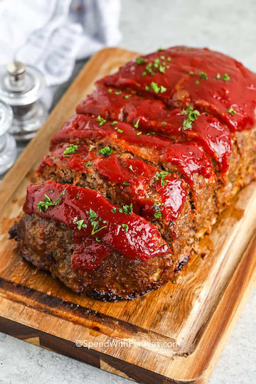

Meatloaf Recipe

Recipe source: SpendWithPennies.com
Description
This easy meatloaf recipe is a family favorite and all 4 of my kids told me it’s one of their top childhood favorites! Serve with a side of mashed potatoes or mac and cheese for the perfect comforting meal.
Ingredients
- Ground beef: I recommend using 80/20 ground beef for the perfect balance of flavor and juiciness.
- Breadcrumbs: These help the meatloaf hold together and give it the right texture. Italian or seasoned breadcrumbs have extra flavor, but Panko bread crumbs will w
- Eggs: These help bind the meatloaf so it doesn’t fall apart when you cut it.
- Onions: Chopped onions add extra flavor to the meatloaf, pre-cooking them makes sure the flavor isn’t too strong.
- Seasonings: Fresh parsley adds a bright, fresh flavor while Italian seasoning are savory and aromatic. Of course, salt and pepper are essential for any recipe, and they help bring out the flavors of the other ingredients.